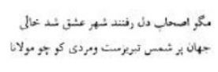
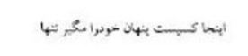
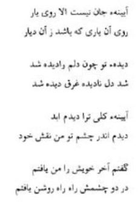
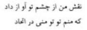

Birbirlerinde bulunan hakikatleri gören, birbirlerine hayran olan bu iki büyük veliden hangisi, hangisine mürşit oldu? Hangisi, hangisinden üstündür, büyüktür? İlâhî aşkta fâni olan velileri birbirleri ile mukayese etmek hatadır. Bütün beşerî kirliliklerden arınmış, nefsanî arzulardan kurtulmuş, Hakk’ın tecellisine mazhar olmuş, vahdet deryasına dalmış, yok olmuş yüce varlıklar, birbirinden üstün görülemezler. Tozlardan, paslardan arınmış, temizlenmiş çeşitli aynalarda parlayan güneşin nûru, aynı nûr değil midir? Bunlar, birbirlerinden ayırt edilebilir mi?
Hazret-i Mevlânâ, gönlü hasret ateşiyle yana yana Şam’da Hazret-i Şems’i ararken, Mevlânâ’nın ilmine, irfanına, aşkına hayran olan, nûru ile gözleri kamaşan Şam’ın arifleri, “Nasıl oluyor da bir mürşit, mürşit arıyor!” diye düşünmüşlerdi. Mevlânâ, Şems’i aradığı gibi, Şems de vaktiyle Mevlânâ’yı aramıştı. Şems de dolaştığı şehirlerde, meşhur şeyhlerin, mürşitlerin hiçbirisinde aradığını bulamamış, Mevlânâ’yı bulunca, “Memleketimden çıkalı Mevlânâ’dan başka bir şey göremedim. Ben aradığımı, Hüdavendigarım’da (Mevlânâ) buldum.” demişti. Bunlar, birbirlerinde ne gördüler, ne buldular? Bunlar, birbirlerine ayna oldular. Bunlar, şeyhlik, mürşitlik, halifelik, müritlik makamlarının ötesine geçtiler de birbirlerinde bulunanı gördüler. Bu sebeple, bunlardan herhangi birisini ötekinin mürşidi sanmak, evvelce de arz edildiği gibi boş bir düşüncedir. Yersiz ve lüzumsuz bir fikre kapılmaktır.
Neden bu düşüncelerle kafamızı yoralım? Neden aralarında fark var diyelim? Şunu bilelim ki bunların her ikisi de o devrin en üstün bilginlerinden, en üstün ariflerinden, mürşitlerindendi. Aralarında birçok hususta benzeyiş, anlayış, görüş birliği vardı. Şems’i, sadece Mevlânâ’yı coşturan, heyecanlandıran rind bir derviş saymak, onun ilmini ve irfanını görmemek büyük bir hatadır. Gerçekten de Mevlânâ gibi Şems de büyük bir bilgindi. Onun Makâlât adlı eserinde görüldüğü gibi sırası geldikçe bahsettiği konulardan açıkça anlaşılmaktadır ki, o, tefsirden, hadis ilminden, şiirden ve devrin bütün ilimlerinden haberdardır. O da Mevlânâ gibi felsefeden ve filozoflardan hoşlanmamaktadır: “Cehennemliklerin çoğu, keskin fikirli kişilerden, filozoflardan, bilginlerden meydana gelir. Onların keskin zekâları kendilerine perde kesilmiştir.” (Şems’in bu düşüncesinde, “Cennet ehlinin çoğu, ebleh, saf kişilerdir.” hadis-i şerifine işaret vardır. Bu hadisle, Hakk’a hakikate, keskin zekâ ile, akıl ve ilimle değil, sevgi ve hayranlıkla ulaşılır, denmek istenmektedir.)
Şems’e göre hakikate varmak, ancak sünnet-i seniyyeye uymakla gösterişten uzak, hâl ehli olarak, sözde kalmayarak inandığını yaşayarak, ilâhî aşkla mümkündür. Şems de Mevlânâ gibi Hazret-i Peygamber Efendimizin (s.a.v.) âşığıdır. Hazret-i Mevlânâ, “Ben Muhammed-i Muhtarın yolunun toprağıyım.” dediği gibi Şems de “Mustafa’nın (s.a.v.) en küçük ve ehemmiyetsiz gibi görünen bir hadisini Kuşeyri Risalesi ve onun gibi en önemli kitaplara değişmem, Peygamberin hadisleri karşısında, onların hepsi de tatsız ve zevksizdir.” diyor. Görülüyor ki şeriata bağlılık, dini, taklitten tahkike çıkarmak, gösterişten uzak, aşk ve îman yolunda yürümek hususunda, Mevlânâ ile Şems arasında bir birlik vardır. Meşrep bakımından bazı farklar bulunabilir. Mevlânâ temkinlidir; Şems, coşkun ve heyecanlıdır. Fakat, şu da bir gerçek ki, Şems gelmeseydi, Mevlânâ belki de babası gibi ikinci bir Sultanü’l-Ulema olarak kalacaktı. Belki Feridüddin-i Attar hazretlerinin Mantıku’t-Tayr’ı gibi Mesnevi hikâyeleri yazılacaktı fakat, coşkun şiirler yazılmayacaktı. Divan-ı Kebîr meydana gelmeyecekti. Mevlânâ, Şems’le görüşmeseydi, Şems’in de ne adı duyulacaktı ne Şems olacaktı. Onlar mânâ yönünden birbirlerini tamamladılar.
Eğer insanlar Mevlânâ ile Şems gibi birbirlerinde bulunanı, birbirlerinin hakikatini görebilselerdi, dünya cennet olurdu; insanlar, daima bir barış hâlinde yaşarlardı. Harpler ortadan kalkar, bütün dünyada silah fabrikaları kapatılır, Afrika’da, şurada burada açlık çeken insanlar bulunmazdı. Dünya, refah içinde yaşardı. Hazret-i Mevlânâ, “Şu dünyada gördüğümüz tenlerimiz, vücutlarımız, bizim gölgelerimizdir. Biz aslında bu gölgelerin ötesinde yaşıyoruz.” diye buyurmaktadır. İşte, Mevlânâ ile Şems, birbirlerinin maddî varlıklarının ötesinde bulunanı gördüler ve onu sevdiler.
Yaşadığımız bu atom devrinde, insanların madde peşinde koştukları bu dünyada, artık Mevlânâlar, Şemsler yok mudur? Yahya Kemal merhum ne demişti:
Aba var, post var, meydanda er yok
Horasan erlerinden bir haber yok
Uzak yollarda durdum hiç eser yok
Diyar-ı Rum ‘a gelmiş evliyadan...
Evet, İslâm diyarlarının en mamur bölgeleri Belhler, Semerkandlar, Horasanlar, yine savaşlar sahası olmuş, Moğolların yerini başka Moğollar almış, Horasan erlerinden Diyar-ı Rum’a evliya gelmiyor ama, İslâm ülkeleri yine boş değil. Baba Kemâl-i Hucendî ne güzel söylemiş:

“Hak âşıkları, erenler gittiler, aşk şehri boş kaldı diye düşünme! Dünya Şems-i Tebrizî’yle doludur ama, Mevlânâ gibi bir er nerede ki onlardaki hakikati görsün.”
Hazret-i Mevlânâ’nın Hayatında Sükûn Devri
Hazret-i Mevlânâ, Şems’in yaşadığından ümidini kesmiş, onu aramaktan vazgeçmişti. Şems’i artık ne Şam’da ne de başka yerde bulamayacağını anlamış da Sultan Veled’in dediği gibi onu, kendi gönlünde, kendisinde bulmuştu. Bulmuştu ama hâlâ gözleri Şems misli, bir gönül dostu arıyordu.
Mevlânâ’nın etrafında ailesi, oğulları, dostları, talebeleri, müritleri bulunduğu hâlde o, içinde bir boşluk duyuyor, adeta kendisini yalnız hissediyordu.
Muhakkak ki insanın en büyük dostu Allah’tır. Bilhassa veliler, Hakk’ın dostları olduklarına göre onlar nasıl olur da yalnızlık hissederler? Cenâb-ı Hakk, “Her nerede bulunursanız bulunun, Allah sizinle beraberdir.” (Hadid Sûresi, 4. âyet) diye buyurmuyor mu? Mevlânâ da bir şiirinde bu hakikati şöyle ifâde eder:

“Burada gizli birisi var, kendini yalnız hissetme, yalnız sanma.”
Fakat Mevlânâ’nın, bu duyguyu paylaşan, kendinde bulunanı kendine hissettiren Şems gibi bir Hak dostuna, bir can aynasına, bir rûh ufkuna ihtiyacı vardı. Bu yüzden huzura ve sükûna kavuşamıyordu. Yahya Kemal merhumun “Ufuklar” şiiri bu rûhî yalnızlığı ne güzel ifâde eder:
Rûh ufuksuz yaşamaz.
Dağlar ufkunda mehâbet,
Ova ufkunda huzur,
Deniz ufkunda teselli duyulur.
Yalnız onlarda bulur rûh ezelî lezzetini.
Bu ufuklar avutur rûhu saatlerce, fakat
Bir zaman sonra derinden duyulur yalnızlık.
Rûh arar kendine bir rûh ufku.
Manevî ufku çok engin ulu peygamberler
-Bahsin üstündedir onlar- lâkin
Hayli mes’ud idiler dünyâda.
Yaşıyorlardı havârileri, ashâbıyle;
Ne ufuklar! Ne güzel rûh imiş onlar! Yârab!
Mevlânâ da sonraları, Mesnevî’sinin II. cildinde 96. beyit ile başlayan bölümde bu “can aynası” konusunu terennüm edecektir:


“Can aynası, sevgilinin yüzünden başka bir şey değildir.
O sevgilinin yüzü ki öteki diyardandır, hakikat âlemindendir, Hakk’ın tecellisine mazhardır.
Senin gözün, benim gönlüme göz olunca hakikati göremeyen bu gönül, hakikati gördü de onda yok oldu.
Seni ebedî ve küllî bir ayna olarak gördüm. Senin gözünde, kendi nakşımı ve hakikî suretimi müşâhede ettim.
Nihayet kendi kendime dedim ki: ‘Ben, onun iki gözünde nûrlu bir yola düştüm de kendimi buldum.’
Benim nakşım, suretim, senin gözünden, ‘Ben sen oldum, sen de ben oldun, aramızda birlik vardır, ayrılık yoktur.’” diye seslendi.
Şems’ten sonra Mevlânâ’ya, gönül dostu, can aynası Konyalı Kuyumcu Selâhaddin hazretleri oldu. Bu yeni hemdemle Mevlânâ mânevî yalnızlıktan kurtuldu, huzur ve sükûna kavuştu. Bu yeni hemdem de ahlâkı, hulûsu ve ibâdete düşkünlüğü ile sûfîlik yolunda hayli ilerlemişti. Seyyid Burhaneddin Tirmizî’den hilafet alarak şeyhlik makamına yükselmişti.
Kuyumcu Selâhaddin ümmî idi yani, hiç okuma yazma bilmiyordu; ama muttakî, ibâdete çok düşkün, çok nûrlu bir mü’mindi. İlâhî aşka gönlünü vermiş, birçok hâller elde etmişti.
Şems Konya’ya geldikten sonra çoğu zaman Mevlânâ ile sohbetlerini Selâhaddin’in evinde yaptıklarını Sipehsalar yazar.
Selâhaddin hazretleri, Hazret-i Mevlânâ’yı çok seviyordu. Ona derin hürmeti vardı. Çünkü her ikisi de aynı şeyhten, Burhaneddin Tirmizî’den feyz almışlardı. Her ikisi de aynı tarikatte, Kübreviyye Tarikati’nde idiler. İkisi de Hak’ta fâni olmuşlardı.
Mevlânâ, Kuyumcu Selâhaddin hazretlerini, kendi yerine halîfe, şeyh olarak seçti. Dostlarını, müritlerini ona tâbi olmaya çağırdı. Çünkü bu yeni gönül dostunda Şems’in nûrunu görüyor, onu Şems yerine koyuyordu. Konyalılar Mevlânâ’nın Kuyumcu Selâhaddin’e gösterdiği sevgiyi çekemediler. Mevlânâ’nın ümmî ihtiyarı şeyh tanıması, ona uymalarını istemesi, ilâhî aşktan nasipsiz olanları çileden çıkarıyordu. Yine dedikodular başladı. İnkârcılar diyorlardı ki: “Birinden (yani Şems’ten) kurtulduk daha beterine çattık. Şems’in sözü dinlenirdi. Anlatışı güzeldi, faziletli, bilgili bir kişi idi. O Tebrizli idi, nazikti, bunun gibi Konyalı, kaba, sert bir adam değildi.” Sonra bu çekemeyenler, aleyhte bulunanlar pişman oldular. Bu sıralarda Hazret-i Mevlânâ, Kuyumcu Selahaddin’in kızı Fatıma Hatun’u oğlu Sultan Veled ile evlendirdi. Bu mutlu mânevî dostluk, on yıl devam etti.
Sonra Şeyh Selâhaddin hazretleri 1258 yılının Aralık ayının 29. günü vefat etti. Yaratılış itibarı sabırlı, sakin, konuşmadan çok susmasını bilen bir kişi olduğu için Şeyh Selâhaddin hazretlerinin rûh arkadaşlığından Hazret-i Mevlânâ sükunet buldu. Tebrizli Şems’in aşk ve îmanla dolu, heyecanlı, hararetli sohbetlerinden Mevlânâ’nın rûhunda hasıl olan coşkunluk yatıştı. İlâhî aşkla yanan sevgi ocağı sönmedi, üstü küllendi, Şems’in ayrılığının kalbinde açtığı yara kabuk bağladı. Bu hâl geçici idi, geçici bir sükunetti. Çünkü Mevlânâ yaratılış icabı, bir yerde kalabilecek, bir hâlde durabilecek karakterde değildi. Hak sevgisinde daima ilerlemek, daima yükselmek, daha çok yanmak, daha çok yakılmak ihtiyacında idi. Aslında o, ne babasından ne Seyyid Burhaneddin’den ne Şems’ten ne de Selâhaddin’den ayrılmıştı. Muvakkat bir zaman için onların ateşi ile yanmış, onlardan alacağını almış, onlarla beraber, onların mânevî kişilikleriyle aşk seferine devam etmişti. Bu üstün varlıkların hepsi de Mevlânâ’nın hayatında, birer terbiye, talim, aşk ve îman merhalesi olarak kalmıştır. Sanki bu seçkin kişilerin hepsini de Cenâb-ı Hak, Mevlânâ’nın yetişmesi için yaratmış; çünkü eğer Mevlânâ dünyayı şereflendirmese idi, bu meşhur kişiler bu kadar meşhur olmayacaklardı. Aslında Hazret-i Mevlânâ, Kur’ân’ın kulu kölesi, Muhammed-i Muhtar’ın (s.a.v.) âşığı olarak gönlüne yerleştirdiği sevgilileri ile Hak yolunda, hakîkat yolunda ilerlemeye devam etmiştir. Bir yerde kalmamıştır. Onun gayesi fâni dostlar, fâni dostluklar değildi. Onun gayesi, Hakk’ı idrak eden gerçek dostlarla beraber hakikî dosta, dostlar dostuna varmaktı. Gönlü, dost sevgisi ile, insan sevgisi ile, Allah sevgisi, Peygamber sevgisi ile dolu olan bu büyük veli, yalnız devrinde yaşayan mü’minlere değil, yüzyıllar boyunca bütün mü’minlere, sevgiden nasip alan, Hakk’ı ve hakikati seven bütün insanlara, bir îman meşalesi, bir aşk meşalesi olmuştur.